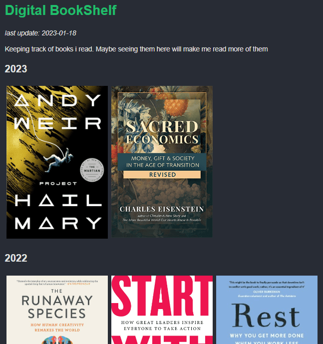
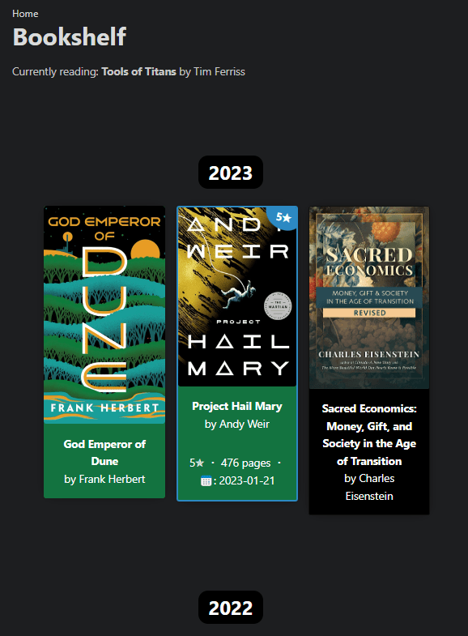

Background
On my old website version i had a bookshelf page where i put the books i read. It was a fancy way of tracking the books i read, aside from using literal.club.
For some good years now, i’ve been tracking1 lots of stuff. From tv-shows watched to hours slept and from bike rides to read books. The book tracking is kinda recent…or not. I just checked my goodreads and my first book is from 2015. But i wasn’t an avid reader. Maybe some 10+ books in a good year. I’ll see exactly when i move my data.
Before that i read stuff in school, required curriculum and fiction in my free time. Harry Potter, Jules Verne, Moby Dick, Tom Sawyer and others. Oh, and also Game of Thrones of course! I bought the paperpack edition, but the books were so big i decided to read them on my phone. LUL
Ok, so beside the tracking, i wanted a nice way to display them on this here website. Before i added the books manually in html. This time i decided to just enter the book data and the page should build and look nicer automatically. I found out that hugo has data templates, where you can put json, yml or even csv, and after that render them in a template. That’s seems like a good storage for tracking stuff.
Decided on yml for now. I guess i could convert it easily in other formats.
Inspiration
Randomly i found this blog post which showed exactly how i can use data templates. He also has a books page.
Great, let’s build this. I followed that tutorial and it was pretty good, but i also wanted to add some pics for my books. I bet i could’ve accomplished that somehow with a little bit of research.
And lo and behold, while reading the Web Weekly newsletter, i found an article about using css flex and stuff for building a visualisation for…wait for it… a books page!!! He talks about how he added extra swag to his books page. Now this looks more like what i want my page to look like.
So i borrowed a bit of his code, some inspiration and started the build.
Decided what data i need to track for my books. The read_type and review fields came after building the template. And the good thing is, i can add how many data i need for a book, without having it for all the books. Here’s how my yml file looks like:
books:
- name: God Emperor of Dune
author: Frank Herbert
image: god_emperor_of_dune.jpeg
pages: 587
date_read: 2023-02-04
fiction: yes
rating: 3
read_type: ebook
review:
- name: Project Hail Mary
author: Andy Weir
image: project-hail-mary.jpeg
pages: 476
date_read: 2023-01-21
fiction: yes
rating: 5
Guess that works for now. After this came the template build and learned a bit about how hugo works (see the documentation below). I spent like 2 evenings getting it to look good enough. But it’s never gonna be perfect, i can spend another 3 weeks. So i’ll leave like this for now, cause i also have to add the data and pics for every book.
Final result
Before
Old version here 
After
New version here 
Might not seem like an improvement, but believe me it is. No more manual html writing. And i’ll keep working on the looks. I admit, for now, it looks a lot like the above mentioned page of hidde.
I also cand add lots of metadata below the book. The details are hidden by default. The 5 stars books will be a bit highlighted. And also i might add a review tag, if i’ll starting writing some words after i finish a book. Also, if you didn’t notice, green background is for fiction and black for non-fiction. I mean, pretty hard to get it from just 3 books. Wait until i fill all the data i have.
Random code nuggets
I used this code {{ index (seq 255 | shuffle) 0 }} to generate random rgb colors:
background-color: rgb({{ index (seq 255 | shuffle) 0 }}, {{ index (seq 255 | shuffle) 0 }}, {{ index (seq 255 | shuffle) 0 }});
Also learned how to make a full width div inside a container2.
width: 100vw;
height: 100%;
margin-left: 50%;
transform: translateX(-50vw);
Documentation while building the page
Got stuck a little but hugo documentation and some google searches helped me achieve the wanted result
- https://gohugo.io/templates/data-templates/
- https://kodify.net/hugo/functions/hugo-cond-function/#example-comparing-hugos-cond-function-with-ifelse
- https://gohugo.io/templates/introduction/#conditionals
- https://gohugo.io/functions/in/
- https://gohugo.io/functions/eq/
-
I’ll write a more indepth post about all the tracking i do and how i don’t use any of that data. I just like tracking stuff. ↩︎
-
https://stackoverflow.com/questions/48817028/how-to-make-full-width-div-inside-container ↩︎